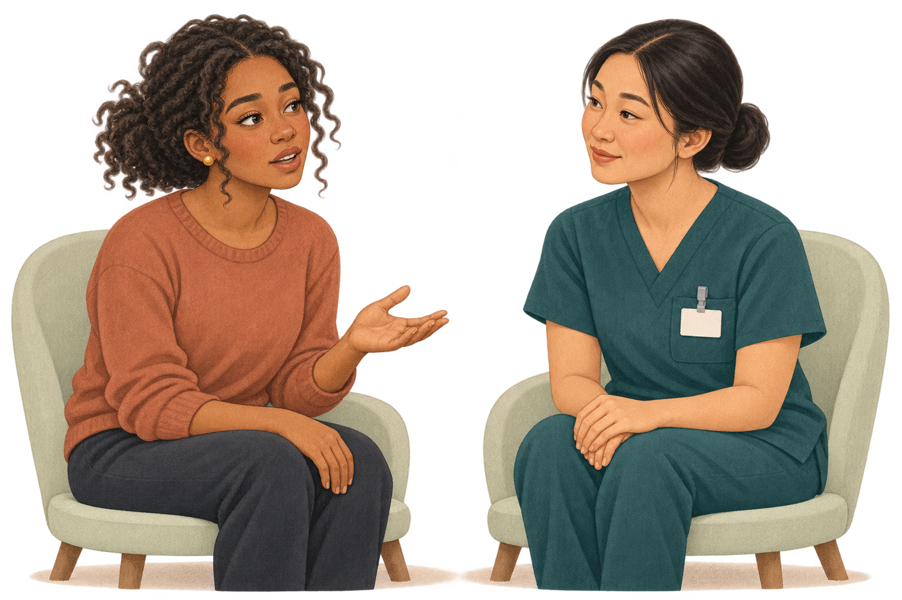

Jordan’s story · Scene 1 of 3
Will they take me seriously?
It has been four days since Maya was born. Taylor is home between shifts, and Jordan is resting while Maya sleeps.
Jordan develops a severe headache that feels different from headaches she has had before. Her vision becomes blurry, and she starts seeing flashing spots.
She remembers being told to watch for changes after birth, but she wonders whether she is simply exhausted.
“Last time I asked about pain, I felt brushed off. What if that happens again?”
Making her concerns heard
Jordan tells Taylor what is happening. They decide to seek emergency medical care and arrive at the emergency department. Taylor stays with Maya while Jordan speaks with the triage nurse.
Jordan feels nervous. During her previous healthcare visit, she did not feel listened to, and she worries about explaining herself this time.
“There’s so much happening. What should I tell them first?”
Help Jordan explain her concern
What could Jordan tell the healthcare team? Open the example for one way to begin.
One way Jordan could say it
“I gave birth four days ago. I have a severe headache that feels different from usual, and my vision is blurry with flashing spots. I need help.”
Share when you gave birth, what has changed, and when it started. You do not need perfect medical words to deserve care.
Respectful care includes listening.
Jordan receives emergency assessment. The nurse listens without interrupting, acknowledges her concerns, and explains what will happen next.
Jordan tells the nurse about her previous experience of feeling dismissed. The nurse thanks her for sharing and asks what would help her feel informed and supported during this visit.

After assessment and treatment, Jordan begins discussing her next steps with the healthcare team. She wants to understand the plan and what to do if she feels unheard again.
Continue to Scene 2